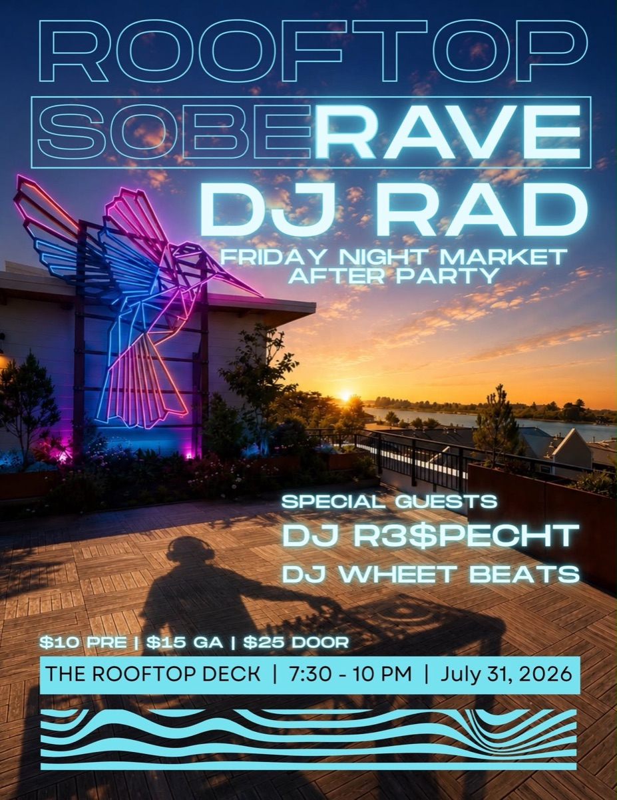
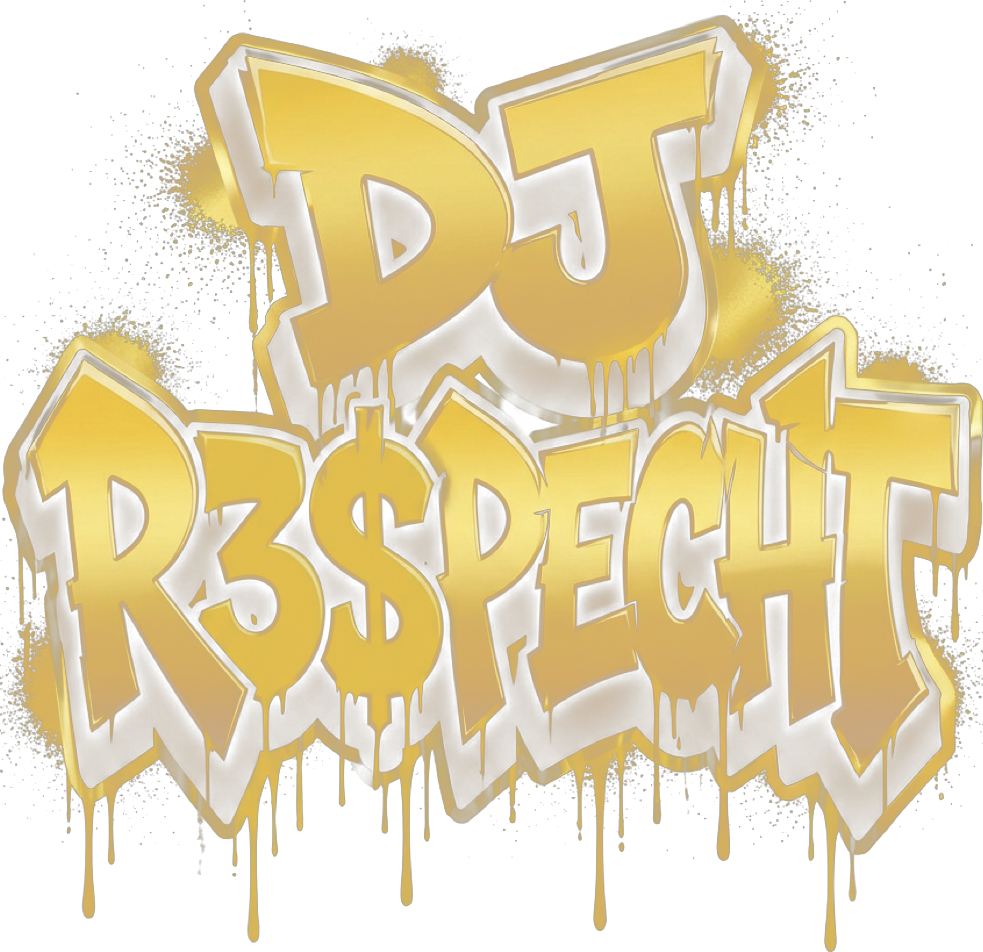
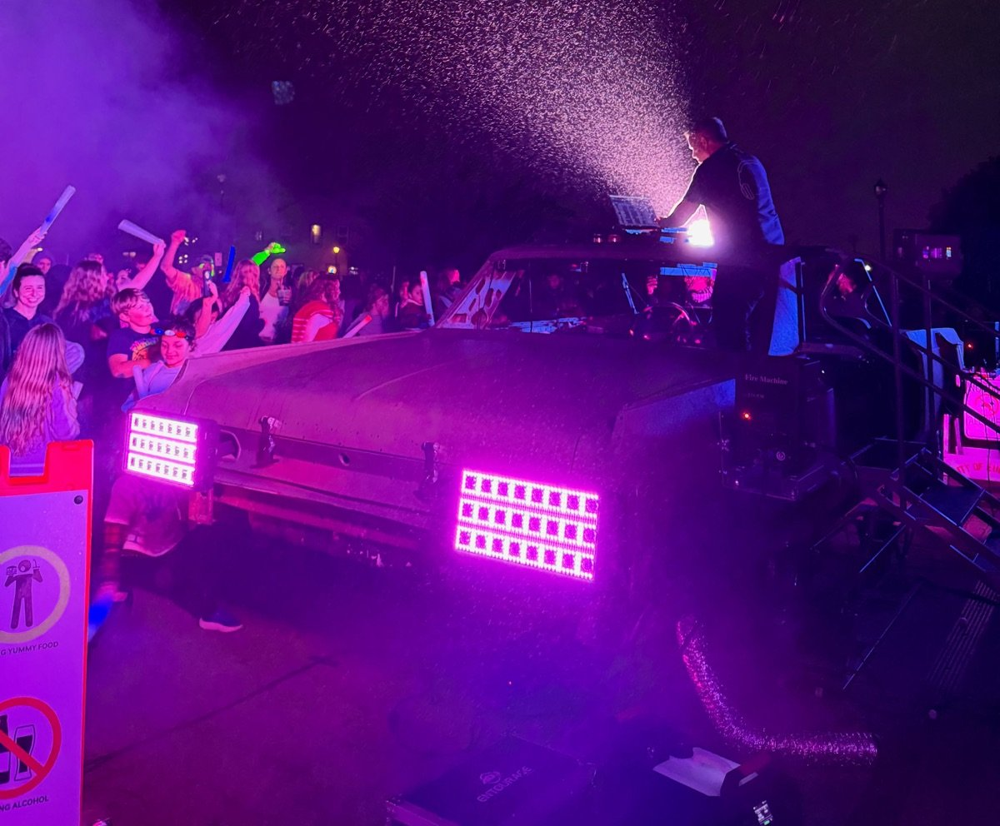

Full-service sound, lighting, and staging production, plus DJ performance — built on 10+ years of touring and festival experience, serving Humboldt County, CA.

Full-service sound, lighting, and staging for venues, planners, bands, and fellow performers across Humboldt County.
See services & pricing →Weddings, private parties, and festival sets, played by a working touring audio technician who also happens to be a DJ.
See packages & pricing →Catch a set live or come say hi.



More dates added as they're confirmed — follow @dj_respecht on Instagram for announcements.
Kieran Edward James Specht has spent 10+ years in professional live production — from South Bay Los Angeles stages to festival lots with 8th Day Sound, working with artists like Beyoncé, My Chemical Romance, Anderson .Paak, and RÜFÜS DU SOL. Now based in Arcata, he brings that same festival-grade experience to local venues, weddings, and events.
Read the full story →“Kieran is a solid sound tech, his professionalism is only matched by his enthusiasm. He truly loves what he does and it shows in every detail. Hardworking, professional, and kind. Top notch sound both on stage and off.”
The Undercovers
“Kieran has been my primary technician for the Wave Lounge for nearly two years now. He has, without question, improved the quality of our live experience for both the patrons and the performers. His knowledge, passion, and love of the work is what sets him apart from the rest.”
Bobby Amirkhan, Blue Lake Wave Lounge
“Kieran always brings the party — whether it’s biking around with his speaker or bringing spaces to life with his music and visuals, his presence, energy, and joy keeps everyone having fun! He is always on time, and the setup is robust, professional, and clean. I’ve seen him at huge dance halls as well as small house parties, and he doesn’t skimp on what he offers to either. Altogether, he’s a great entertainer and worker.”
Love Taaa

Tell us about your event and we'll follow up with availability and a custom quote.
Start your inquiry